鱼香肉丝
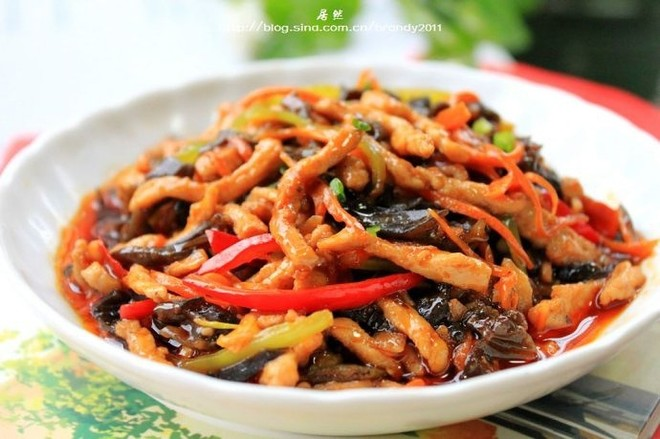辣中带酸，酸中带甜，甜中带咸，咸中又带鲜……味道丰富而不杂腻！恰似女儿心，捉摸不透，又飘忽不定，似近又远，偶尔火辣又偶尔羞涩……
用料
鱼香肉丝的做法
-
1
木耳泡发，里脊肉切丝，用少许盐，糖抓均匀，一小勺淀粉上浆后用一小勺油拌匀封备用，木耳，辣椒，红萝卜也切丝备用，用糖、香醋，料酒，酱油，清水调成酱汁，比例约为：1：1：0.3：2：3 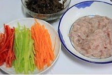 -
2
锅烧热，倒入少许油，倒入瘦肉滑油 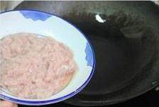 -
3
肉身变白装起备用 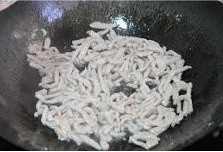 -
4
锅里留油，放少许蒜末，爆香后放入木耳快炒几秒 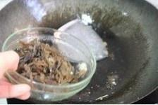 -
5
加入红萝卜继续炒几秒至变软即可装起备用 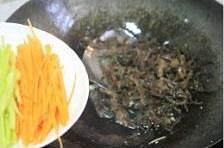 -
6
锅里再次放入少许油，放入蒜末、切碎的泡椒、葱白、姜末爆香 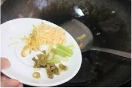 -
7
舀入两汤匙郫县豆瓣酱 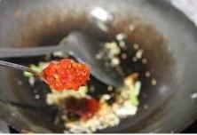 -
8
炒出红油 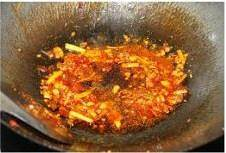 -
9
加入滑好的肉丝，翻炒均匀 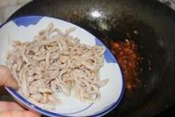 -
10
倒入青红椒丝 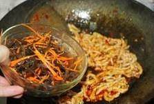 -
11
翻炒片刻后倒入之前炒好的红萝卜和黑木耳丝 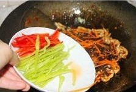 -
12
再倒入之前兑好的酱汁（酱汁中可以加入3汤匙的清水），再次翻炒均匀 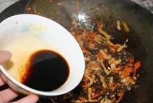 -
13
少许淀粉加水兑好勾薄芡后即可装起享用 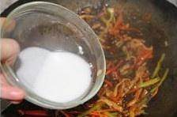
小贴士
1、步骤中提到的比例为大约，具体请根据个人口味稍作调整，要以自己喜欢的口感为准。
2、豆瓣酱一定要炒出红油再倒入肉丝，要不油色会相差比较远，亮泽度也会较差
3、酱汁提前兑好，在肉丝下锅炒均匀后立即可以倒入锅中，避免临时找酱汁引起遗漏
4、整个菜只需要很少的盐，只有在腌制肉丝的时候放一点点，因为酱油比较咸，豆瓣酱也咸，泡椒、香醋都有盐分
5、勾芡别太厚重，吃起来会腻，因为有酸，甜咸鲜味，搭配很均衡，所以，这道菜虽然看着红油很亮，其实并不太辣。
参照这个菜谱，大家做出 6483 作品
上传你做的鱼香肉丝
鱼香肉丝所在分类
- 家常菜
- 下饭菜
- 鱼香
- 宴客
- 单身食谱
随便看看
- 土豆炖排骨
- 咸泡饭
- 美容
- 番茄牛尾汤
- 6寸芒果慕斯蛋糕
- 肉炒粉条
- 巧克力爆米花
- 香菜炒牛肉丝
- 宝宝土豆泥
- 新鲜肉糜
该菜谱创建于 2012-10-28
318474 收藏
版权归作者所有，没有作者本人的书面许可任何人不得转载或使用整体或任何部分的内容。